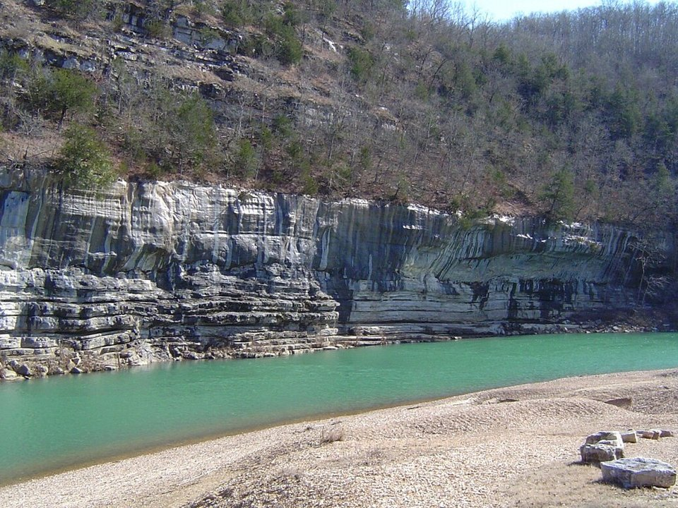

Ponca · Cabins and outfitter
Buffalo Outdoor Center
Cabins and lodge rooms, with canoe and kayak rentals and shuttles.
Official details for Buffalo Outdoor CenterBluffs, float trips and elk in the Ozarks.
The Buffalo was the first river in the country to be protected as a national river, and its upper stretch near Ponca runs beneath some of the highest bluffs in the Ozarks. Land at Harrison, about 40 minutes away, stay in a cabin by the river, float past the bluffs, hike to Hawksbill Crag and Lost Valley, watch elk at dusk in the Boxley Valley, and eat at the Ozark Cafe on the Jasper square.

Time illustration: direct distance at 150 KTAS plus 15 minutes for departure and arrival, matching the discovery page. Use ForeFlight for your actual flight plan.
Check the weekend weather at both ends → Flight category, your minimums and the crosswind on the best runway.
More in Aviation & getting around below. Crew cars change often: call the FBO before you go. How to have a rental car waiting at the FBO · Know something we missed? Tell us.
KHRO, Boone County, is a non-towered field with a 6,161-foot runway in Harrison, about 40 minutes from Ponca and Jasper.
Boone County Airport, Harrison, AR
Ridges and valley fog nearby; check terrain on your route. Arrange a rental car before you go. No live fuel price is shown.
Ozark weather: valley fog on summer and fall mornings, fast-building summer thunderstorms, spring severe weather, and ridges up to about 2,500 feet. About 720 nm from Myrtle Beach: plan a fuel stop and three nights.
Rates and availability need travel dates. Spring float season and fall color weekends book early.
Cabins and lodge rooms, with canoe and kayak rentals and shuttles.
Official details for Buffalo Outdoor CenterCabins near Lost Valley, with canoe rentals.
Official details for Lost Valley Canoe & LodgingAn inn and cabins over the “Arkansas Grand Canyon.”
Official details for The Cliff House InnPrices and availability for your dates, through our partner Stay22. This is an affiliate link: we may earn a commission at no cost to you. The picks above are never paid.
Reserve weekend dinners.
Burgers and pie on the Jasper square since 1909.
Harrison Chamber for Ozark CafeHome cooking with canyon views; seasonal.
Official details for The Cliff House InnSpring is best for floating the upper river.
Canoe beneath 500-foot bluffs, March to June on the upper river.
Buffalo Outdoor CenterThis prototype links to the local visitor site. It does not yet match events to your travel dates.
The upper river runs high enough to float.
Buffalo Outdoor Center for Float seasonBluffs framed by hardwoods.
NPS for Fall colorBugling elk in the Boxley Valley.
NPS for Elk rutCheck the local calendar when choosing a weekend, and confirm dates and tickets with the organizer.
A sample river weekend. Plan three nights for the flight. No bookings or availability confirmed.
Land at KHRO early and pick up the car.
Lost Valley Trail.
Lunch at the Ozark Cafe in Jasper, then back to the airport.
Land at KHRO, subject to weather and your actual flight plan.
Lost Valley Trail.
Dinner at the Cliff House.
Float from Ponca to Kyles Landing.
Elk in the Boxley Valley at dusk.
Dinner in Jasper.
Hawksbill Crag at sunrise.
Return the car and allow time at the airport.
Afternoon thunderstorms build in summer; leave early.
Float from Ponca.
Hawksbill Crag.
Elk in the Boxley Valley.
These details make the difference between an appealing list and a usable getaway.
Cabin and car first, then a float shuttle.
About 720 nm. Plan a fuel stop and three nights.
Check river levels; the upper Buffalo can be too low by summer.
March to June and October.
Picks and links reviewed by WingAway Weekends. Hours, prices, menus and availability change often, so confirm directly with each place before booking. Spotted something out of date, or have a favorite we missed? Email us at hello@wingawayweekends.com.
WingAway Weekends helps you discover the destination. Use ForeFlight and current official aviation information for route, performance, weather, NOTAMs and preflight decisions. Flight planning and PIC responsibility stay with the pilot.